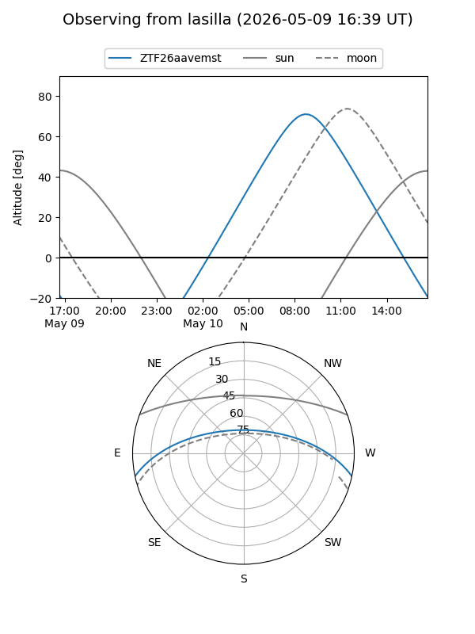
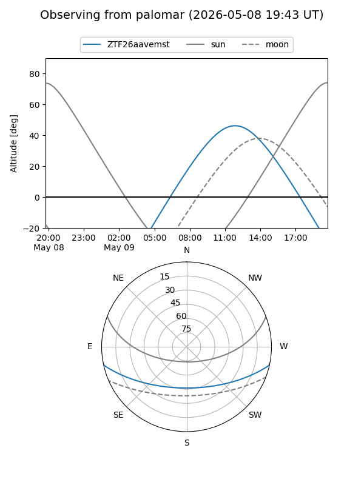
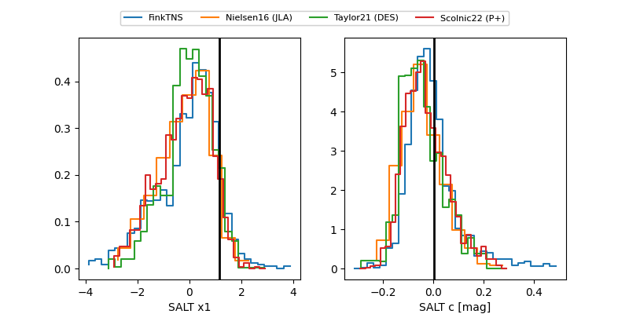

ZTF26aavemst
Target ZTF26aavemst at 2026-05-09 11:49
Aliases and brokers:
FINK: link
Lasair: link
ALeRCE: link
alt names
ZTF26aavemst (ztf,fink_ztf)
Coordinates:
equatorial (ra, dec) = 287.9669,-10.42838
equatorial (HMS+DMS) = 19:11:52.06,-10:25:42.17
galactic (l, b) = (25.8804,-9.23343)
Flags:
Photometry:
last ztfg=19.25
2 ztfg detections
Lightcurve
Visibility


Additional plots
